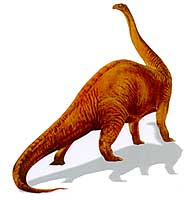

| Nombre |
Características |
Imagen |
Tiranosaurio |
- Medía 12 metros de largo y 4 de altura.
- Su boca medía un metro de largo.
- Cada diente tenía una longitud de 30 centímetros.
- Poseía 60 piezas dentales.
- La vista era su sentido más desarrollado.
- Se alimentaba de miembros de su propia especie.
- Tenía brazos muy cortos.
- Su esperanza de vida era de 30 años, alcanzando su vida adulta a los 16.
|
 |
Velociraptor |
- Era un terópodo.
- Una de las características más llamativas es que los dromeosáuridos estaban completamente cubiertos de plumas.
- Medía 2 metros de largo, 0,5 metros de alto, y pesaba más o menos 15 kilos.
- Poseían 3 dedos en cada mano, que eran largos y permitían manipular objetos y presas.
- Las patas traseras eran largas y permitían alcanzar velocidades de casi 40 kilómetros por hora.
- Un dedo de cada pata contaba con una garra gigantesca en forma de gancho, que se conoce como garra asesina.
- Habitaba en ambientes áridos o desérticos.
- No existen pruebas convincentes de que cazase en grupos.
|
 |
Anquilosaurio |
- Pesaba cerca de 6 toneladas y era un dinosaurio herbívoro.
- Tenía patas cortas y se alimentaba de vegetación baja, que no sobrepasaba los 2 metros de altura.
- Su boca tenía forma de pico, semejante a las tortugas y papagayos.
- Vivieron desde Jurásico medio hasta los tiempos del Cretácico superior.
|
|
Alosaurio |
- Su nombre significa reptil extraño y diferente.
- Medía alrededor de 9 metros de largo.
- Caminaba en dos patas, tenía gran cráneo, cuello corto, extremidades delanteras reducidas y una cola bastante extensa.
- Pesaba aproximadamente una tonelada.
- Poseía cerca de 70 piezas dentales muy filosas.
|
 |
Iguanodonte |
- Era un dinosaurio herbívoro bastante grande.
- Avanzaba normalmente sobre cuatro patas, pero podía correr en dos patas.
- Tenía el tamaño de un elefante.
- El cráneo de este animal era similar al de un caballo.
|
 |
Paquicefalosaurio |
- Era un dinosaurio bípedo de unos cuatro metros y medio de longitud y dos toneladas de peso.
- Poseía un casco de hueso macizo, de hasta veinticinco centímetros de grosor, que formaba una especie de cúpula semiesférica en el techo del cráneo.
- Su nombre significa Reptil con Cabeza Gruesa de Wyoming.
- Tenía brazos cortos en comparación con sus patas traseras, los cuales estaban dotados de con cinco dedos y poseía garras afiladas sus cuatro extremidades.
|
|
Triceratops |
- Se le estima entre los 7,8 a 9 metros de largo y 2,9 a 3 de altura.
- Eran herbívoros, recios y voluminosos, pesaban entre 6,1 y 12 toneladas.
- Lo más distintivo era su gran cabeza, proporcionalmente una de las más grandes de todos los animales terrestres.
- Su piel era gruesa y no uniforme.
|
|
Estegosaurio |
- Tenía un lomo fuertemente arqueado.
- Poseía la cabeza cerca del suelo y la cola rígida sostenida en el aire.
- Su tamaño estaba estimado en alrededor de los 9 metros de largo por 4 metros de alto.
- Es un género de dinosaurios tireóforos estegosáuridos.
|
|
Apatosaurio |
- Habitaba en praderas de helechos y espacios abiertos.
- Vivió hace ente 154 y 150 millones de años, en el Jurásico superior.
- Poseía una longitud de 22 metros, 4.4 metros de alto y 4 metros de ancho, con un peso de 31 toneladas.
- Su nombre significa "reptil despistado".
|
 |
Espinosaurio |
- Tenían el cráneo parecido al de los cocodrilos actuales.
- Están considerados los dinosaurios carnívoros más grandes conocidos.
- Podían alcanzar entre los doce y los diecinueve metros de largo y pesar de siete a veinte toneladas.
- Eran capaces de tragar presas grandes de una manera similar a los pelícanos actuales.
|
|
Deinonicus |
- Poseían unas patas alargadas, que le permitían correr a unos 50 km/h, cuando fuera oportuno.
- Poseía una gran garra retáctil en forma de hoz, que medía 12 centímetros en el pie, que les ayudaba a herir y a desgarrar a su presa.
- Tenía una inteligencia superior a otros dinosaurios pero no cazaban en grupos como mucha personas piensan.
- Estaba cubierto con una capa de plumas, que lo aislaba de las inclemencias del tiempo.
|
|
Braquiosaurio |
- Vivió hace entre 152 y 148 millones de años, en el Jurásico.
- Su nombre significa "Reptil con brazos de lagarto".
- Su longitud era de 24 metros, con hasta 15 metros de altura y un peso de 37 toneladas.
- Las patas delanteras eran mucho más largas que las traseras, por lo que llebava el cuello elevado y tenía una gran garra en el pulgar que servía para excavar un hollo donde depositar los huevos.
|
|